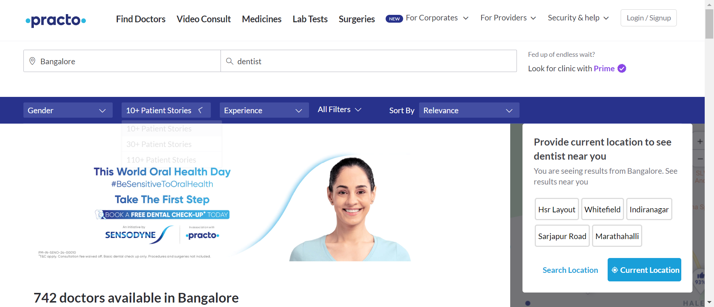
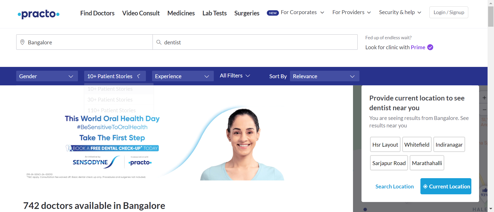

-
Doctor Details
11:23:59 AM / 00:01:30:412 Fail
Doctor Details
04.11.2024 11:23:59 AM 04.11.2024 11:25:29 AM 00:01:30:412 · #test-id=1FailUser finds first five doctor detailsGiven user is on the practo home pagestepDefinitions.Hooks.addScreenshot(io.cucumber.java.Scenario)User finds first five doctor details Then user validates the practo home page titlestepDefinitions.Hooks.addScreenshot(io.cucumber.java.Scenario)User finds first five doctor detailsWhen user clicks on find doctorsstepDefinitions.Hooks.addScreenshot(io.cucumber.java.Scenario)User finds first five doctor details
Then user validates the practo home page titlestepDefinitions.Hooks.addScreenshot(io.cucumber.java.Scenario)User finds first five doctor detailsWhen user clicks on find doctorsstepDefinitions.Hooks.addScreenshot(io.cucumber.java.Scenario)User finds first five doctor details And user selects location feildstepDefinitions.Hooks.addScreenshot(io.cucumber.java.Scenario)User finds first five doctor details
And user selects location feildstepDefinitions.Hooks.addScreenshot(io.cucumber.java.Scenario)User finds first five doctor details And user selects specialist feildstepDefinitions.Hooks.addScreenshot(io.cucumber.java.Scenario)User finds first five doctor detailsAnd user applies filters for patient stories feildstepDefinitions.Hooks.addScreenshot(io.cucumber.java.Scenario)User finds first five doctor detailsAnd user applies filters for experience feildstepDefinitions.Hooks.addScreenshot(io.cucumber.java.Scenario)User finds first five doctor detailsAnd user applies filters for fee feildstepDefinitions.Hooks.addScreenshot(io.cucumber.java.Scenario)And user applies filters for availability feildStep skippedAnd user applies filters for sort feildStep skippedThen user stores the top five doctors in a list and prints their detialsStep skipped
And user selects specialist feildstepDefinitions.Hooks.addScreenshot(io.cucumber.java.Scenario)User finds first five doctor detailsAnd user applies filters for patient stories feildstepDefinitions.Hooks.addScreenshot(io.cucumber.java.Scenario)User finds first five doctor detailsAnd user applies filters for experience feildstepDefinitions.Hooks.addScreenshot(io.cucumber.java.Scenario)User finds first five doctor detailsAnd user applies filters for fee feildstepDefinitions.Hooks.addScreenshot(io.cucumber.java.Scenario)And user applies filters for availability feildStep skippedAnd user applies filters for sort feildStep skippedThen user stores the top five doctors in a list and prints their detialsStep skipped
-
org.openqa.selenium.remote.UnreachableBrowserException
1 tests
org.openqa.selenium.remote.UnreachableBrowserException
1 failedStatus Timestamp TestName Fail 11:24:51 AM stepDefinitions.Hooks.addScreenshot(io.cucumber.java.Scenario) Doctor Details.User finds first five doctor details.stepDefinitions.Hooks.addScreenshot(io.cucumber.java.Scenario)
-
@smoke
1 tests
@smoke
1 failedStatus Timestamp TestName Fail 11:23:59 AM User finds first five doctor details Doctor Details.User finds first five doctor details
Started
Apr 11, 2024 11:23:58 AM
Ended
Apr 11, 2024 11:25:29 AM
Features Passed
0
Features Failed
1
Features
Scenarios
Steps
Timeline
Tags
| Name | Passed | Failed | Skipped | Others | Passed % |
|---|---|---|---|---|---|
| @smoke | 0 | 1 | 0 | 0 | 0% |